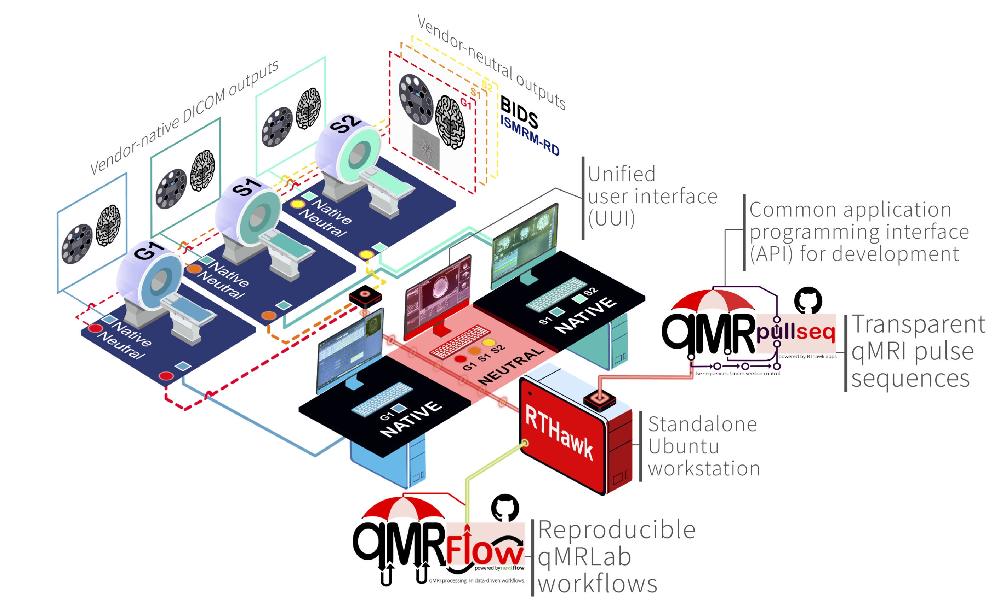

Introduction¶
Agah Karakuzu, Labonny Biswas, Julien Cohen-Adad, Nikola Stikov


🏅 Interact with, explore and reproduce our findings! 🏅
The following pages of this Jupyter Book encapsulates the code, data and runtime (R and Python) for you to explore our findings using interactive figures.
You can modify the code, and re-generate the outputs in your web browser without installing or downloading anything to your computer!
If you have any questions or comments, feel free to open an issue by clicking the GitHub icon at the top of this page.👆
qMRFLow execution reports
What is VENUS?¶
VENUS is the acronym of our vendor-neutral qMRLab workflow that begins with the acquisition of qMRI data using open-source & vendor-neutral pulse sequences and follows with the post-processing using data-driven and container-mediated qMRFLow pipelines.
{kind=link}
Open-source and vendor-neutral pulse sequences are developed as RTHawk applications, that can be run on most GE and Siemens clinical scanners.
NATIVE vs VENUS: Does it matter to the measurement stability?¶
The purpose of this study was to test whether VENUS can improve inter-vendor reproducibility of T1, MTR and MTSat measurements across three scanners by two vendors, in phantoms and in-vivo.
To test this, we developed a vendor-neutral 3D-SPGR sequence, then compared measurement stability between scanners using VENUS and vendor-native (NATIVE) implementations.
Toggle the tabs for details:
G1 GE Discovery 750w (3T)
S1 Siemens Prisma (3T)
S2 Siemens Skyra (3T)
G1 SPGR (
DV25.0_R02_1549.b)S1 FLASH (
N4_VE11C_LATEST_20160120)S2 FLASH (
N4_VE11C_LATEST_20160120)
G1 qMRPullseq/mt_sat (
v1.0onRTHawk v3)S1 qMRPullseq/mt_sat (
v1.0onRTHawk v3)S2 qMRPullseq/mt_sat (
v1.0onRTHawk v3)
ISMRM/NIST System Phantom (SN = 42)
3 healthy participants volunteered for data collection.
The answer is yes!¶
Our results show that VENUS can significantly decrease inter-vendor variability of T1, MTR and MTsat.
Implications
VENUS approach to qMRI has several implications for qMRI research and for the reliability of multicenter clinical trials.
This Jupyter Book supports that by highlighting the core idea of VENUS:
To deliver what it promises, quantitative MRI needs to dispense with undisclosed implementation details, from scanner to publication.
See Also
This work has been accepted for publication in Magnetic Resonance in Medicine. The last version of the preprint is available here.
About the data and derivatives¶
The dataset downloaded to this Jupyter Book includes the raw data and first-order derivatives, following the qMRI-BIDS data standard.
All the figures and statistical analyses were based on the first-order derivatives.

To reproduce the first-order derivatives from the raw data, you need to run qMRFlow pipelines using Nextflow.
Click the button to reveal qMRFlow instructions.
Install Nextflow
Pull Docker images:
docker pull qmrlab/minimal:v2.5.0b docker pull qmrlab/antsfsl:latest
Download the dataset
Run
To process the phantom data:
cd /to/VENUS nextflow run venus-process-phantom.nf --bids /set/to/bids/directory -with-report phantom-report.htmlTo process the in-vivo data:
cd /to/VENUS nextflow run venus-process-invivo.nf --bids /set/to/bids/directory -with-report invivo-report.html
If Docker is not available
You need to make sure that following dependencies are installed on your local machine/environment and accessible via shell (i.e. added to the system PATH):
qMRLab v2.4.1
ANTs
FSL
MATLAB or Octave
In the config file, set the following parameter to false at this line, this will enforce workflow to look for local executables.
Next, set MATLAB or Octave executable path and qMRLab directory at this line
Finally, execute the workflows using the nextflow run commands above.
Acknowledgements¶
This research was undertaken thanks, in part, to funding from the Canada First ResearchExcellence Fund through the TransMedTech Institute. The work is also funded in part by theMontreal Heart Institute Foundation, Canadian Open Neuroscience Platform (Brain CanadaPSG), Quebec Bio-imaging Network (NS, 8436-0501 and JCA, 5886, 35450), Natural Sciencesand Engineering Research Council of Canada (NS, 2016-06774 and JCA, RGPIN-2019-07244),Fonds de Recherche du Québec (JCA, 2015-PR-182754), Fonds de Recherche du Québec- Santé (NS, FRSQ-36759, FRSQ-35250 and JCA, 28826), Canadian Institute of HealthResearch (JCA, FDN-143263 and GBP, FDN-332796), Canada Research Chair in QuantitativeMagnetic Resonance Imaging (950-230815), CAIP Chair in Health Brain Aging, CourtoisNeuroMod project and International Society for Magnetic Resonance in Medicine (ISMRMResearch Exchange Grant).